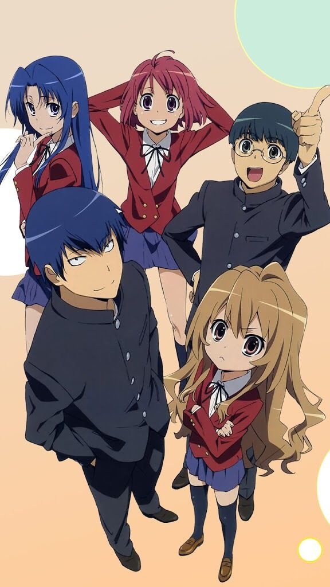

| AnimeSA | Home Top Anime Genres About |
Two classmates form an unusual alliance to help each other win their crushes, but their friendship slowly turns into something deeper.

Ryuuji Takasu has a scary face but a kind heart, while Taiga Aisaka is small but fierce, known as the "Palmtop Tiger."
They agree to help each other get closer to their crushes, but their relationship grows stronger, leading to unexpected love.
Contains emotional scenes and teenage relationship themes.
Toradora! became one of the most beloved romance anime, known for: